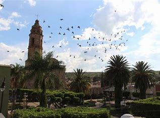
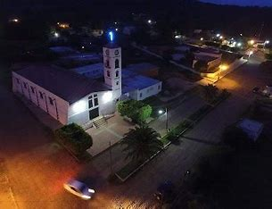
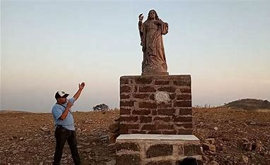

El municipio de Cuquío es profundamente rico en tradiciones religiosas, albergando diversos templos, comunidades y sitios históricos que forman parte del legado espiritual y cultural de la región. Muchos de sus ranchos y pueblos cuentan con siglos de historia y una fe que ha perdurado de generación en generación.

Uno de los lugares más representativos del fervor religioso en Cuquío es Teponahuasco, conocido por la devoción al milagroso “Señor de Tepohua”. Según cuenta la tradición oral, cuando la imagen del Cristo llegó al poblado, los habitantes intentaron trasladarla a otro lugar, pero fue imposible moverla: era como si el mismo Cristo hubiese elegido quedarse ahí.

Desde entonces, se le considera el protector del pueblo. Cada año, durante las fiestas patronales, la imagen es llevada en procesión por las calles, pero siempre regresa a su santuario. Muchos fieles acuden a venerarlo, pues se le atribuyen numerosos milagros, especialmente en la sanación de personas gravemente enfermas.
Las Cruces es una pequeña comunidad perteneciente a Cuquío, pero con una gran relevancia histórica y religiosa. Es conocida como "tierra de mártires", ya que fue el lugar donde fueron asesinados los sacerdotes Justino Orona Madrigal y Atilano Cruz Alvarado durante la Guerra Cristera en 1928.

Los mártires fueron delatados mientras descansaban y posteriormente atacados por soldados. Hoy en día, cientos de peregrinos visitan el Templo de los Mártires y la Casa de los Mártires, espacios que se han convertido en lugares de oración, reflexión y homenaje a la fe vivida con valentía.
El imponente Cerro de Cristo Rey es otro de los sitios religiosos más visitados en la región. La historia de este monumento se remonta a noviembre de 1919, cuando el entonces Obispo Valverde, durante una visita pastoral, sintió el deseo de celebrar misa en la cima del cerro que contemplaba en Silao.

Hoy, este cerro alberga una monumental imagen de Cristo Rey que atrae a fieles de todo el país. Desde lo alto, no solo se puede admirar la vista panorámica del paisaje, sino también vivir una experiencia espiritual única. Es común que los visitantes realicen caminatas como acto de fe para llegar hasta la cima.
En cada rincón de Cuquío, la fe se manifiesta en sus tradiciones, su historia y su gente. El turismo religioso en este municipio no solo invita a conocer sus templos y monumentos, sino también a experimentar el profundo espíritu de devoción que se vive en sus comunidades.